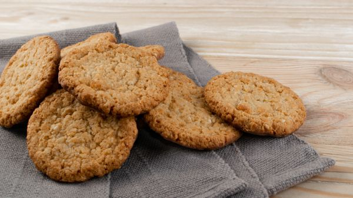

6. Havrekakor

Havrekakor har en mild smak av havre och en lätt krispig yta. De passar bra till kaffe eller te.
Ger: cirka 32 kakor.
Ingredienser
- 175 g rumsvarmt smör
- 4 dl havregryn
- 2 dl strösocker
- 2 dl vetemjöl
- 2 tsk bakpulver
Gör så här
- Värm ugnen till 200 °C.
- Vispa ihop smör, havregryn och socker snabbt i en bunke.
- Blanda vetemjöl och bakpulver i en separat skål.
- Rör ner mjölblandningen och arbeta ihop allt till en deg.
- Forma små bollar, tryck ihop dem och lägg dem på en plåt med bakplåtspapper.
- Grädda mitt i ugnen i cirka 10–12 minuter.
- Låt kakorna svalna på plåten.
Receptkälla: ICA – Havrekakor